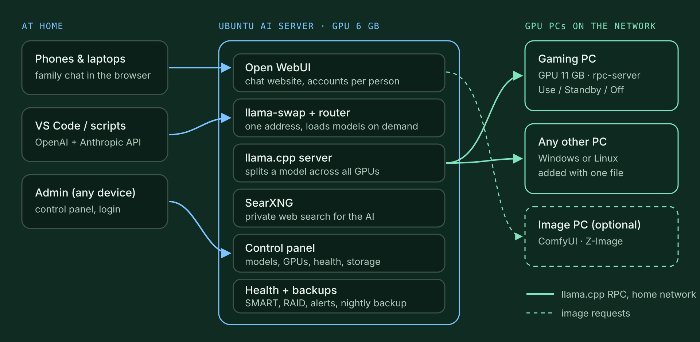
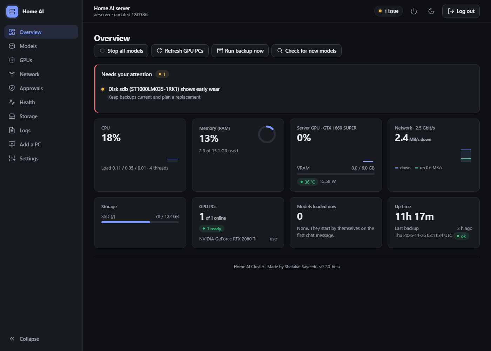

- Hardware
- Ubuntu server with a GTX 1660 Super (6 GB), Windows gaming PC with an RTX 2080 Ti (11 GB), SSD plus a 1 TB HDD, wired home network
- Software
- llama.cpp (RPC), llama-swap, Open WebUI, SearXNG, Docker, ComfyUI; my own scripts in Bash, Python and PowerShell
- Status
- Beta (v0.2.0-beta): runs on my home server; open source under the MIT license
- Published
- , updated
Start here: what's where #
Once it's installed there are two web pages. The family only ever needs the first one.
- The chat on port 3000 (Open WebUI): everyone at home logs in with their own account and chats, sends pictures, searches the web or makes images.
- The control panel on port 8091: the admin page. It has these tabs:
- Overview: everything at a glance, and one list of what needs your attention.
- Models: test, load or unload the installed models, follow downloads (pause, continue, cancel), weekly suggestions that fit your GPUs, and search Hugging Face to add new ones.
- GPUs: every graphics card in the house. Set each one to Use, Standby or Off, set up auto-off while a PC is busy, Forget an old PC, or stop the running models.
- Network and Approvals (optional): every device on the home network, alerts for new ones, and blocks that only happen after you approve them. It can read the device list from several router brands (tested on iStoreOS).
- Health: live CPU, memory, GPU, temperatures, network, services with restart buttons, and the SMART health of every drive.
- Storage: what uses space where, the backups, and moving models to a folder, another drive or a RAID. Erasing a drive needs “ERASE” plus the admin password.
- Logs: the latest lines from each part of the server.
- Add a PC: the download link for a Windows PC, the command for a Linux PC, and the GPU PCs the server can see. Here you can also give one PC direct access to the AI API or the image share, reserve its address in the router, and see whether its image generation is running.
- Settings: Telegram alerts, which devices may use the API, the admin password and the logged-in devices, the router, and Power: restart or shut down the server with a 10-second delay you can cancel (also from the power button at the top).
On the GPUs tab, each graphics card shows a status:
- online: ready to use.
- in use by a model: busy right now, not broken.
- slow to answer: usually Wi-Fi or a busy PC.
- offline: the PC is off. An offline PC can be removed with Forget, for example after it gets a new IP address.
- off automatically: auto-off has handed the GPU back to its PC for now.
Every button and status is explained in the control panel guide on GitHub.
Why I built it #
I wanted one AI that everyone in my family could use for chat, coding help and pictures, running on my own hardware, so the models and the chats stay at home and nobody needs an account somewhere else.
The catch is that good models need a lot of GPU memory. My server's graphics card has 6 GB and my gaming PC's has 11 GB. A 20-billion-parameter model won't fit on either one, but it does fit on both together. That became the core idea: GPU pooling, splitting one model across the graphics cards of several PCs over the home network. The other half of the job was making it simple enough that nobody else in the family ever has to think about how it works.
How it works #


- One server runs everything. An Ubuntu machine runs the chat website, the model manager, web search, the control panel and the health checks.
- Other PCs lend their GPUs. On a Windows PC you download one
.batfile from the server and double-click it. It installs a small llama.cpp rpc-server that starts with Windows, and the server finds the new GPU by itself. - Big models use all GPUs, small ones stay on one. Small models stay loaded on the server for instant answers. Big models are split across every GPU that is allowed.
- Gaming still comes first. Each GPU can be set to Use, Standby (only for big models) or Off. This also happens automatically: every GPU PC reports how much its own programs use its GPU. When that goes above 40% (for example, while a game is running), the server switches that GPU off and stops the models using it. Five minutes after the PC goes quiet, it takes the GPU back.
- “auto” and “team” models. auto picks the right model for each message: pictures go to a vision model, code to a coding model, quick chat to a small fast model. team lets two models answer and a third combine them into one best answer.
Measured speed #
Each model was asked for a 400-token answer, after it had loaded (the second of two runs). Answer speed is how fast the model writes once it has started.
| Model | Where it runs | Answer speed (tokens/s) |
|---|---|---|
| qwen3.5-4b | Server GPU | 63 |
| gemma-4-12b (vision) | GPU PC | 42 |
| gpt-oss-20b | Split over both GPUs | 57–71 |
| auto | Picks one model per message | 42 |
| team | Two models answer, a third combines | about 2.5 min per answer |
The 20B model is the interesting one: it doesn't fit on either graphics card alone, yet split over both it writes faster than anyone can read (more in the benchmark post). team is slow because three models work on every answer, so it is for questions where quality matters more than speed.
What it can do #
- Chat for the family: Open WebUI with a private account for each person. It works on phones and can be added to the home screen.
- Add a PC in one click: one file on Windows, one command on Linux.
- Add models from the web: search Hugging Face in the control panel, see whether a model fits your GPUs, then click Add. A weekly check suggests newer models that fit.
- Private web search: a self-hosted SearXNG lets the AI look things up without accounts or tracking.
- Live health page: CPU, RAM, GPU temperatures, network, services and drive SMART data, refreshed every 0.5 seconds.
- Auto-off while gaming: a PC's GPU is taken away from the AI while the PC itself needs it, and given back afterwards. A GPU PC that is busy with a model shows as “in use”, not offline.
- Drives and RAID: keep models in any folder, on a spare drive, or on several drives as RAID 0, 1, 5 or 10, set up from the control panel.
- Alerts and backups: Telegram messages about disk, RAID or service problems, and a nightly backup of chats and settings.
- Coding assistants: an OpenAI- and Anthropic-compatible API for VS Code extensions and scripts.
- Image generation (optional): ComfyUI with Z-Image Turbo on an NVIDIA PC, used straight from the chat — or, experimentally, on the server itself.
The control panel #
Everything is managed from one web page: a single-file Python app that uses only the standard library. It works on any device at home once you log in. What each tab does is in Start here at the top.


Security decisions #
- Home network only. The firewall accepts connections from the home network only. Nothing is opened to the internet.
- The AI API is not public. Port 8080 is closed to everyone except the PCs you allow in the panel. “Anthropic-compatible” only means tools like Claude Code can be pointed at your server instead of the cloud; nothing is sent anywhere else.
- Workers trust one machine. The GPU PCs only accept model traffic from the AI server.
- A real login for the admin panel. Passwords are hashed with PBKDF2, sessions use HttpOnly cookies, and only 5 failed attempts are allowed in 10 minutes. The first password needs a one-time setup code.
- Least privilege. The panel runs as a normal user and may run only a few named root helpers, each an exact command. Those helpers live outside any folder the panel user can write to, and the panel can never touch the system disk.
- Changes need your approval. When the optional network watch (or the AI agent) wants to block a device or a website, it only asks; the change runs only after you approve it in the panel or by tapping Approve in Telegram. On my own server, the AI agent can also add models, but only up to a size limit, so it can't fill the disk.
- Optional HTTPS. The panel can serve HTTPS, with a self-signed certificate or behind a reverse proxy.
- No data on the gaming PC. It only lends its GPU while it is switched on. All models and chats stay on the server.
Before this release I ran a red-team review of the setup with Claude Code and the open-source claude-red skills (a community project, not made by Anthropic), scored the findings, and tightened the parts it flagged: a stricter, add-only wrapper for the agent's downloads, firmer checks on which approvals are accepted, generic error messages, and moving the root helpers out of folders the panel user can write to.
Problems I ran into #
Search engines block home servers #
Google refused the server's searches and DuckDuckGo answered with CAPTCHAs. Google's own search API is closed to new users. SearXNG with Brave as the main engine turned out to be the reliable choice.
A new drive that wouldn't mount #
After formatting a new hard drive, the system's cached drive ID was out of date and the mount failed. Reading the ID straight from the disk (blkid -p) and mounting by UUID with nofail fixed it, and the server still starts if the drive is missing.
A restart that never finished #
The chat container checked for an update every time it started, and it hung on a large download. Updates are now a separate step that downloads first and swaps afterwards.
Windows and Linux line endings #
The wrong kind of line ending can break a Windows .bat file or a Linux script. A .gitattributes file now gives each file type the right line endings, whichever computer it is edited on.
Live dashboards without flicker #
Refreshing every 0.5 seconds kept redrawing the page and swallowed clicks. The panel now redraws only the parts that have changed, never overlaps requests, and pauses while you click.
Set it up yourself, step by step #
The setup has four parts. Only the first is required. The README on GitHub has every command in full.
1. Install the AI server #
- Install Ubuntu Server 24.04 or newer with the OpenSSH server option, and connect it to the router with a cable.
- Reserve the server's address in your router (DHCP reservation or static lease), so it never changes.
- Log in over SSH and run the installer:
sudo apt update && sudo apt -y install git
git clone https://github.com/shafakat12/home-ai-cluster.git
cd home-ai-cluster
sudo bash install.sh- If it installs an NVIDIA driver, reboot and run
sudo bash install.shagain; it continues where it stopped. It also asks where to store the models. - Open
http://SERVER-IP:3000and create the first chat account, then openhttp://SERVER-IP:8091and create the control-panel password with the setup code the installer printed. - Pick a model in the chat and say hello. Add family members in Open WebUI when you're ready.
2. Add GPU PCs (optional) #
- Windows: on the PC, open
http://SERVER-IP:8090/add-this-pc.bat, save it, double-click it and click Yes. Wait for WORKER-OK. - Linux: run
curl -fsSL http://SERVER-IP:8090/add-worker-linux.sh | bash.
The PC shows up in the GPUs tab within a minute. Give it a name, choose Use, Standby or Off, and reserve its address too (the Reserve IP button does it for supported routers).
3. Image generation with ComfyUI (optional) #
- On a Windows PC (tested): run the
install-comfyui.ps1script as Administrator. It installs ComfyUI, downloads the Z-Image Turbo model and lets only the AI server reach it. - On a Linux PC: a few manual steps: ComfyUI in a Python environment, PyTorch for your GPU, the model, a service that starts with the PC, and a firewall rule for the server only.
- On the server (experimental): set
INSTALL_COMFYUI=yesand runsudo bash install.sh 85-comfyui. It shares the GPU with the chat models and is reachable only from the server itself.
Then connect it in Open WebUI under Admin Panel → Settings → Images, and everyone can make pictures straight from the chat.
4. Telegram alerts (optional) #
- In Telegram, create a bot with @BotFather and copy its token.
- Get your user ID from @userinfobot, then open your new bot and press Start.
- Paste both into the control panel under Settings → Alerts and Telegram and send a test.
From then on you get a message when a disk shows problems, a service stops or a GPU is switched off automatically, and approval requests come with Approve and Reject buttons. Only taps from your own account count.
I built it step by step on my own home server with help from an AI coding assistant (Claude). I decided what it should do, ran and tested it on my hardware and measured the speeds; the AI helped write much of the code and the documentation.
The project is open source under the MIT license. It is built on llama.cpp, llama-swap, Open WebUI, SearXNG and ComfyUI, each under its own license.